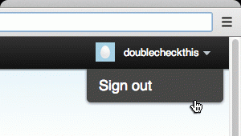

Choose a Network to Add a New Profile
Sprout will begin gathering data for your profiles as soon as they are attached.
Profile Limit Reached
You’ll need to upgrade your plan or remove a profile in order to connect a new one.
Add a Twitter Profile
Please make sure you are logged in with the proper account when you authorize Sprout.
Add a Facebook Page
Make sure you are logged in to Facebook as an Administrator to authorize Sprout, then you can choose the specific pages to connect.
Setup a Personal profile insteadAdd a Personal Facebook Profile
Add your profile to monitor incoming messages and share status updates. Reporting is not available for Personal Facebook profiles.
Setup a Facebook Page insteadAdd a Google Profile
Please make sure you are logged in with the proper account when you authorize Sprout.
Connect your Personal LinkedIn
Grant access to your profile to share updates and view your feed.
Connect Google Analytics
Add your Google Analytics account to see how your website traffic correlates with your social media activity.
Connect Google Reader
Setup your Google Reader and view it from all of your groups. Each user will be able to setup their own account.
√
@Oatmeal
{{this-profile}} is now connected to {{this-group}}
Click "Done" to return to Sprout, or connect another profile using the network icons above.
√
Success!
{{integer}} page{{s are}} now connected to {{this-group}}
Click "Done" to return to Sprout, or connect another profile using the network icons above.
√
Success!
{{this-profile}} is now connected to {{this-group}}
Click "Done" to return to Sprout, or connect another profile using the network icons above.
√
Success!
{{this-profile}} is now connected to {{this-group}}
Click "Done" to return to Sprout, or connect another profile using the network icons above.
√
Success!
{{this-profile}} is now connected to {{this-group}}
Click "Done" to return to Sprout, or connect another profile using the network icons above.
√
Success!
{{this-profile}} is now connected to {{this-group}}
Click "Done" to return to Sprout, or connect another profile using the network icons above.
√ Success!
Google Reader is connected to your account
Click "Done" to return to Sprout, or connect another profile using the network icons above.